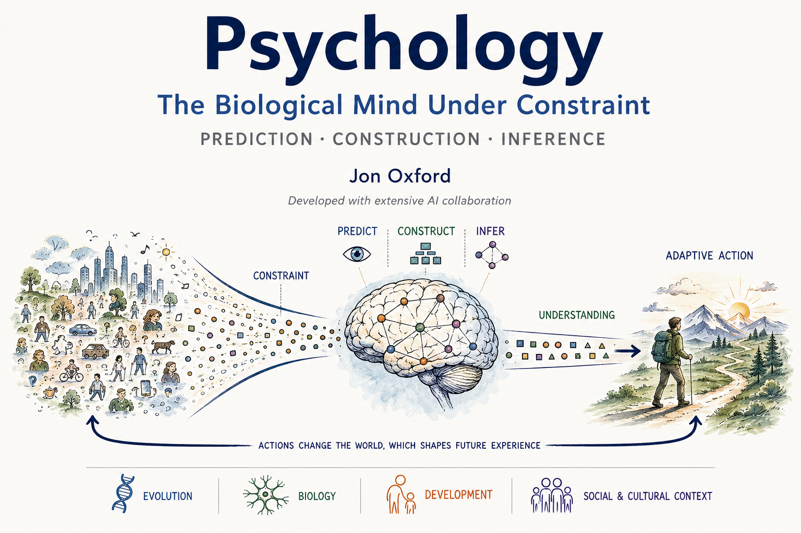

Copyright & full AI Collaboration Statement
Enter the Textbook →In my time teaching college students, I have found that it is difficult for students to read the textbook for this course. Not only because you know, boring. But because the bigger problem is that reading often doesn't feel productive. A commercial textbook contains far more information than you could possibly use in one semester, and you have no good way to know which ideas deserve careful attention.
So over the past few years, with AI help, I created a Narrative file for each chapter that emphasized the important ideas, connected them to one another, and helped students see what deserved closer attention.
Eventually, agentic AI became good enough to help me tackle the larger problem: why keep writing guides to someone else's textbook? Over the summer I turned 21 iterations of teaching this class into my own textbook. I cut the material you don't need for this course and built what you do need around an integrative, overarching framework that psychology as a field is missing.
That means there is no hidden distinction between what is in the book and what you need to know. All material is fair game for exams.
I did not want the book to feel like thirteen unrelated piles of psychology facts. A larger idea connects the course: we are biological organisms trying to make sense of an uncertain world with limited information, limited time, and limited processing capacity. We have to notice some things and ignore others, compress information, make predictions, learn when those predictions are wrong, and decide what to do. The chapters are different parts of that same problem.
I did not want to write a textbook where you read six pages and then wonder what you were supposed to get out of them. The book breaks ideas into shorter, more digestible chunks, usually with one main idea at a time. It also uses examples, comparisons, figures, retrieval questions, and connections to things you have already learned. The goal is not just to make the book easier to read. It is to make the important ideas easier to think about and remember.
Read for the main idea, not every sentence. When you hit a retrieval question, stop and answer it without looking back.
Pay attention to figures, comparisons, and Stop and Retrieve, Think About It, and Do Not Confuse boxes. They are part of the material.
You do not need to memorize the book. You do need to understand the ideas well enough to explain them, distinguish them, and apply them to new examples. That is what the exams will ask you to do.
It is inevitable that you will find issues, so I want you to report them so I can update the book for future semesters. Use the Textbook Report Form to send them my way.